Quick Start
Installation
Install following prerequisite tools.
Note: Do not use OS account with username contains non-ASCII characters or white spaces. Some of following tools don’t work well.
IntelliJ IDEA
If you have not installed, download Ultimate or COMMUNITY and install it. (COMMUNITY is opensource product)
https://www.jetbrains.com/idea/
Android Studio
If you have not installed, download Android Studio and install it.
https://developer.android.com/studio
Xcode (Mac only)
If you have not installed, search Xcode in App Store and install it.
Command Line Tools for Xcode (Mac only)
If you have not installed, open terminal window and run this command.
xcode-select --install
Homebrew (Mac only)
If you have not installed, go to https://brew.sh/ and install it.
Java Development Kit (JDK)
If you have not installed, search installation guide and install it.
node & npm
If you have not installed, install it.
(for Mac)
You can install NPM with brew. Open terminal window and type these.
brew install node
node -v
(for Windows)
Download installation package. https://nodejs.org/en/download/
Note: Use newer version to avoid troubles of installing appium.
Appium 2.0
Appium 2.0 is required.
If you are already using appium, check version.
appium -v
If you have installed appium 1.x, uninstall it.
npm uninstall -g appium
Install appium 2.0 using npm.
npm install -g appium@next
appium -v
Note: Appium 2.0 is going to release. “@next” is required to install 2.0
See Tested Environments to get tested version.
If you have already installed appium, uninstall it and install it again.
appium -v
npm uninstall -g appium
npm install -g appium@next
appium -v
Example
wave1008@SNB-M1 ~ % appium -v
2.0.0-beta.33
wave1008@SNB-M1 ~ % npm uninstall -g appium
removed 437 packages, and audited 1 package in 816ms
found 0 vulnerabilities
wave1008@SNB-M1 ~ % npm install -g appium@next
added 426 packages, and audited 427 packages in 16s
62 packages are looking for funding
run `npm fund` for details
found 0 vulnerabilities
wave1008@SNB-M1 ~ % appium -v
2.0.0-beta.35
wave1008@SNB-M1 ~ %
UIAutomator2 driver
Install UIAutomator2 driver.
appium driver install uiautomator2
If you have already installed the driver, uninstall it and install it again.
appium driver list
appium driver uninstall uiautomator2
appium driver install uiautomator2
appium driver list
See Tested Environments to get tested version.
XCUITest driver(Mac only)
Install XCUITest driver.
appium driver install xcuitest
If you have already installed the driver, uninstall it and install it again.
appium driver list
appium driver uninstall xcuitest
appium driver install xcuitest
appium driver list
See Tested Environments to get tested version.
Setting Environment Variables (Mac only)
Set environment variables in initializing script (.zshrc or others).
Example
export ANDROID_SDK_ROOT=/Users/$USER/Library/Android/sdk
export PATH=$ANDROID_SDK_ROOT/emulator:$ANDROID_SDK_ROOT/tools:$ANDROID_SDK_ROOT/platform-tools:$PATH
Note: Execute log out/log in to take effect above settings.
Setting Environment Variables (Windows only)
- Open Android Studio.
- Select
Tools > SDK Manager > Appearance & Behavior > System Settings > Android SDK - Copy Android SDK Location.
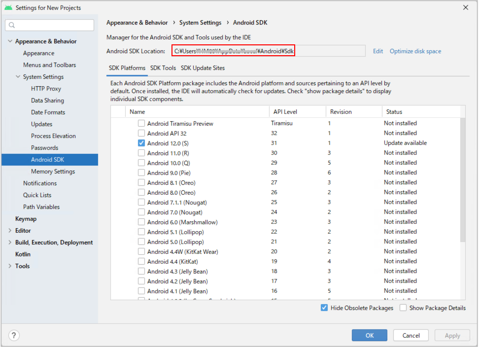 - Set environment variable
ANDROID_SDK_ROOT.
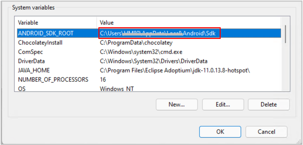 - Edit environment variable
Path. Add entries as follows.%ANDROID_SDK_ROOT%\emulator%ANDROID_SDK_ROOT%\platform-tools%ANDROID_SDK_ROOT%\tools
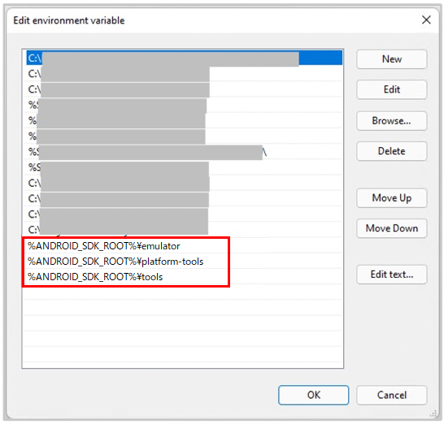
- Reboot the PC.
Setting up AVD (Android Virtual Device)
Create AVD for demo
- Open Android Studio.
- Select menu
Tools > Device Manager. Click
Create device.
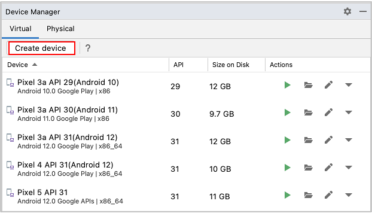Select
Pixcel 3aand click Next.
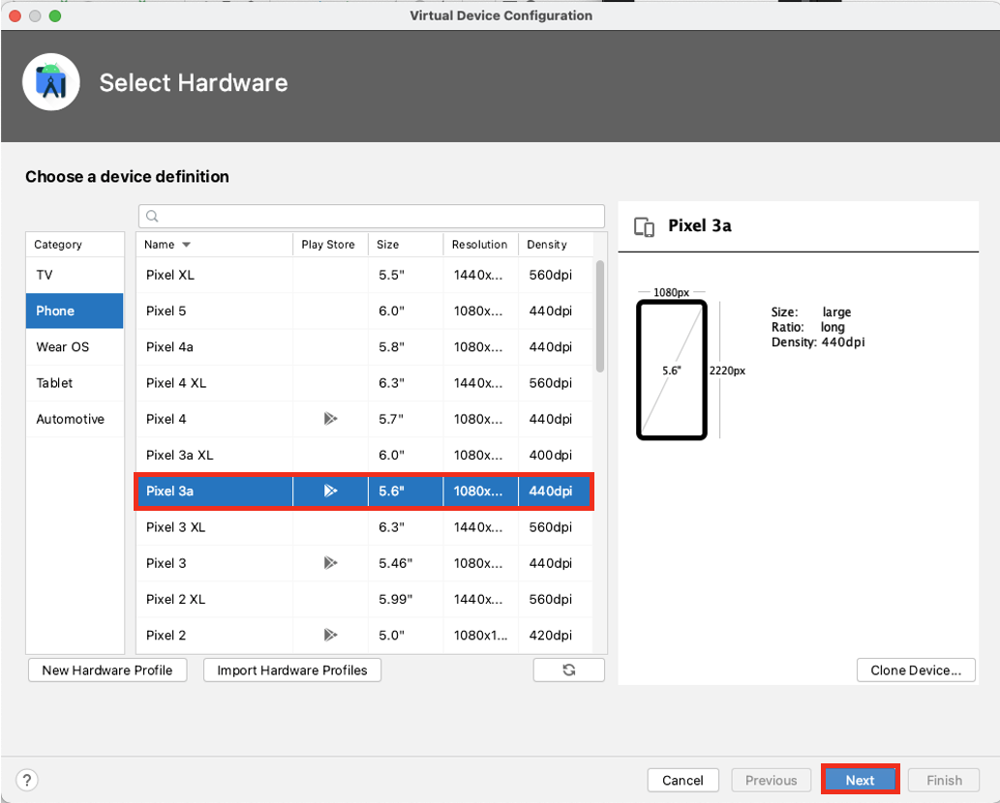Select
S/API Level 31/Android 12.0 (Google Play)and clickNext(Google Play Store is required for demonstration using Calculator app). Select arm64 image for M1 Mac, otherwise select x86_64 image.
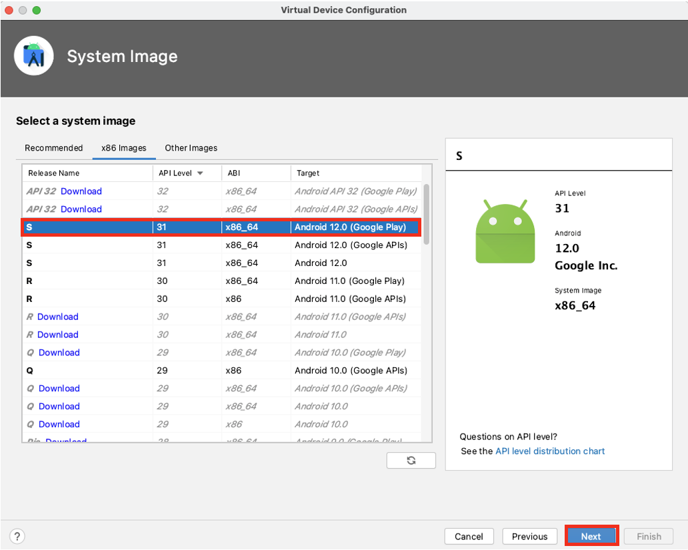Set AVD Name to
Pixel 3a(Android 12)and clickFinish.
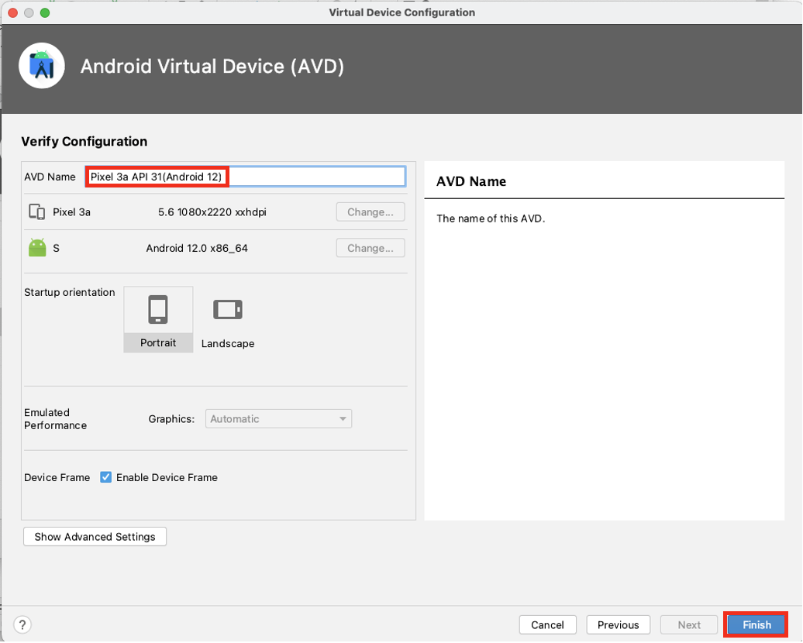
Demonstration
Let’s see demonstration.
Opening Project
- Open shirates-core project directory in Finder or Explorer.
- Right click
build.gradle.ktsand open with IntelliJ IDEA.
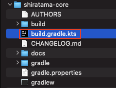
Enable right-click test running
IntelliJ IDEA > Preferences(orFile > Settings)Build, Execution, Deployment > Build Tools > Gradle- Set
Run tests usingtoIntelliJ IDEA

Run AndroidSettingsDemo
- Launch the AVD of Android 12 from Device Manager.
- Open
shirates-coreproject in IntelliJ, right click onsrc/test/Kotlin/demo/AndroidSettingsDemoand select Debug ‘AndroidSettingsDemo’ - You’ll see logs in the Console like this.
Console output
Connected to the target VM, address: '127.0.0.1:59302', transport: 'socket'
lineNo logDateTime testCaseId logType group message
1 2022/12/09 04:17:17.294 {} [-] () ----------------------------------------------------------------------------------------------------
2 2022/12/09 04:17:17.307 {} [-] () ///
3 2022/12/09 04:17:17.308 {} [-] () /// Shirates 2.0.0
4 2022/12/09 04:17:17.308 {} [-] () ///
5 2022/12/09 04:17:17.309 {} [-] () powered by Appium (io.appium:java-client:8.1.1)
6 2022/12/09 04:17:17.309 {} [-] () ----------------------------------------------------------------------------------------------------
7 2022/12/09 04:17:17.309 {} [info] (parameter) testClass: demo.AndroidSettingsDemo
8 2022/12/09 04:17:17.309 {} [info] (parameter) sheetName: AndroidSettingsDemo
9 2022/12/09 04:17:17.309 {} [info] (parameter) logLanguage:
10 2022/12/09 04:17:17.903 {} [info] () Initializing with testRun.properties.(testConfig/android/androidSettings/testrun.properties)
...
Check output reports
- Click the hyperlink in the IntelliJ IDEA’s console to open the log directory
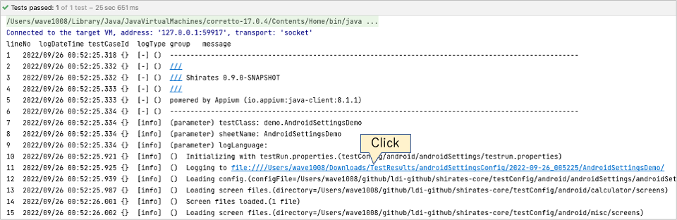 - You’ll see log and report files.

- First, open _Report(simple).html file. You’ll see simple test report. Click on a line to highlight the screenshot image. Double-click on a line to show a larger image.
- Second, open _Report(detail).html file. You’ll see more information with log type “info”.
- At last, open AndroidSettingsDemo@a.xlsx file with MS-Excel or other compatible software.
HTML-Report(simple)
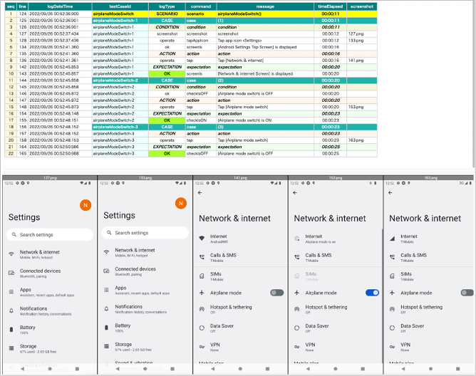
Spec-Report
AndroidSettingsDemo@a.xlsx
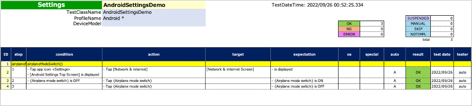
TestList
- Open Downloads/TestResults in Finder (or Explorer).
- Open TestList_androidSettingsConfig.xlsx file with MS-Excel or other compatible software.
TestList_androidSettingsConfig.xlsx
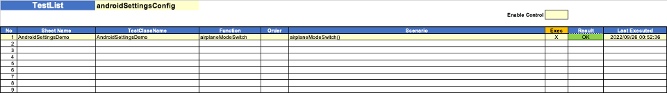
Run CalculatorDemo
- Launch the AVD of Android 12 from Device Manager.
- Open Google Play Store and install Calculator(Google LLC).
- Open this project in IntelliJ, right click on
src/test/Kotlin/demo/CalculatorDemoand select Debug ‘CalculatorDemo’ - You’ll see the calculator test works.
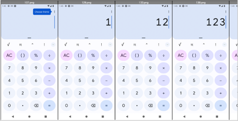
Run iOSSettingsDemo
- Open Xcode and setup iOS Simulator.(iPhone 13, iOS 15.5)
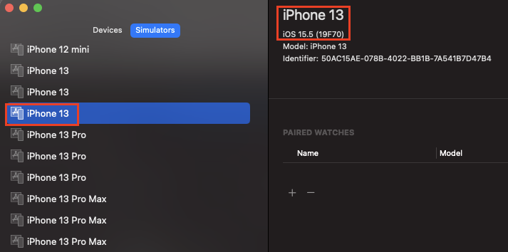
- Open shirates-core project in IntelliJ, right click on
src/test/Kotlin/demo/iOSSettingsDemoand select Debug ‘iOSSettingsDemo’ - You’ll see the iOS Settings test works.
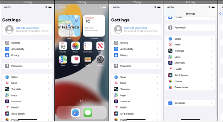